00读前一分钟 · 全文脉络（完形先读首句，再看结构）
完形的首句从不设空。本篇首句是一个定义句：Caravanserais were roadside inns that were built along the Silk Road …——「X were Y that …」一句话交代了是什么（路边客栈）、在哪儿（丝路沿线、中国到中东）、文体（百科词条式说明文：没有人物、没有引语、没有作者立场）。⟹ 后面二十个空没有一个在表态，全是「这东西的某个事实该怎么说」——方向几乎不会反，难点在关系和搭配。
or 两边说的都是「谁出钱」）。📌 结构套路：是什么（①）→ 叫什么（②）→ 为什么建、建在哪（③）→ 有什么用：文化（④）、贸易（⑤❶❷）→ 还剩多少（⑤❸）——百科词条的标准五件套，读完首句就能预判下一段写什么。
📌 ④⑤两段同构，但第二句的逻辑词不同：两段都是「首句总述功能（④❶ meeting point · ⑤❶ marketplace）→ 第二句句首逻辑空 → 后面展开」。11 填 As a result、16 填 Indeed——④❷ 是由聚集推出的新结果（交流中心），⑤❷ 是把集市说具体（第一站卖货进货）。位置一样、关系不一样，判据是「第二句说的是新东西还是同一件事的细节」。
📌 本篇的两个「多」：① 逻辑空 6 个（与 2011、2016 并列十七年最多），而且六个空六种关系：举例 5 · 目的 9 · 结果 11 · 并列 13 · 坐实 16 · 让步 19；② 五道题四个选项都能进同一个框架（8 都接 to · 10 都能接 point · 15 都接 in · 18 都能进 It is ___ that · 20 都能跟在 in 后面），搭配知识只能帮你确认「能说」，选哪个还得靠语境。
📌 完形不是 20 道独立小题，是一条语义链。本篇这条链几乎是直的（说明文没有转折立场），所以每一个空都先问「它和谁是什么关系」：和同句的谁并列、和上一句是因果还是举例、和下一句是让步还是坐实。
01完形正文（20 空 · 点空格跳到该题）
🟨 点空格＝跳到下面对应的解析卡（先自己选，再看解析；答过的空会就地填上答案词）｜ 🟡 黄底词＝重难点词，点开看词根／辨析 ｜ 蓝色虚线＝长难句，点击跳到 07 精析 ｜ 每段「意」＝该段意译 ｜ 选中任意其他单词浮出「查有道」｜ 原文由你的浏览器从原卷识别成文字（首次约 3 秒，之后秒开）；「原卷对照」可逐句看扫描原图、改识别错字
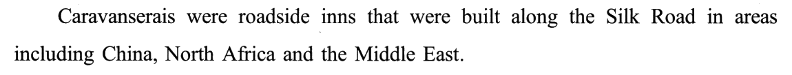
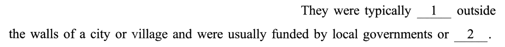
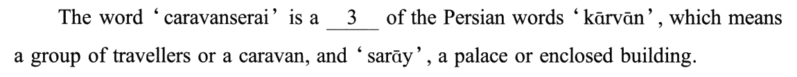
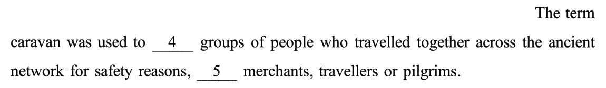
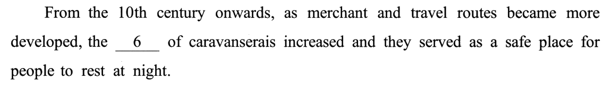
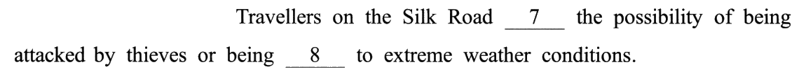
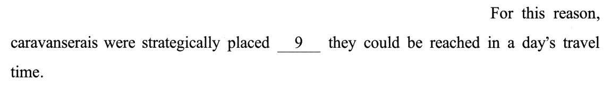
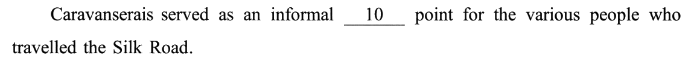
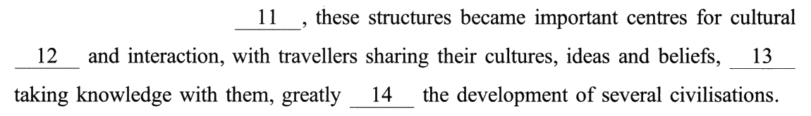
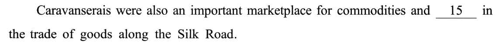
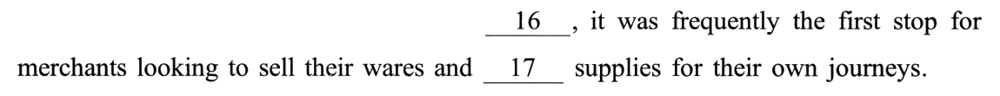
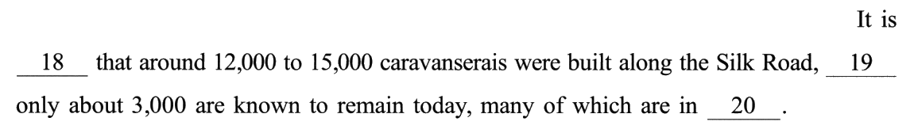
02逐空精解（点选项即判 · 再看解析）
每空 0.5 分。题干只引空格所在的短语，完整句子看 01。本篇是百科式说明文，二十个空方向都不难定，真正要动脑的是两件事：① 逻辑空先说出关系名——六个逻辑空恰好六种关系（举例 5 · 目的 9 · 结果 11 · 并列 13 · 坐实 16 · 让步 19），先在心里说「这里是 X 关系」再看选项，四选一立刻变一选一；② 「四个都是真搭配」时别靠语感——10 的 talking／starting／breaking／meeting point、12 的 cultural heritage／revival／exchange／status、20 的 in ruins／debt／fashion／series，四个都是地道说法，只能回到句子里问「这儿说的是什么」。
outside the walls of a city or village。
🔗 线索① 首句刚说了大范围（built along the Silk Road · in areas including China …），本句收窄到具体方位（城墙外、村子外）——从「大致在哪一片」到「具体在哪个位置」；② 空格后面是方位介词 outside，不是一个名词宾语 ⟹ 要的是「be ___ ＋ 地点」框架。
✅ C locatedbe located ＋ 地点＝「坐落于、位于」：客栈通常坐落在城墙或村庄之外。
❌ 另外三个错在哪
by local governments 被 or 连成并列，共同修饰 funded。
🔗 线索or 是并列连词，两边必须回答同一个问题。by local governments 回答的是「谁出钱」⟹ 空格也要回答「谁出钱」——不是政府，就是私人（publicly vs privately）。
✅ A privately由地方政府出资，或由私人出资——or 两边一公一私，正好穷尽「谁出钱」。
❌ 另外三个错在哪
For this reason, caravanserais were strategically placed —— this reason 回指本句，「因为这个原因才精心布点」⟹ 本句必须说「危险是真实存在的」。
✅ B faced旅人面临被盗贼袭击、遭受极端天气的可能 ⟹ 所以客栈要布点一日可达。
❌ 另外三个错在哪
03考点分类（完形不背单个空，要看「这题在考什么」）
点某一类 → 下方列出该类所有空、正文里同步高亮 → 点小格跳到解析卡。（分类依据不是「空格里填的是什么词」，而是「解这一题你得做什么动作」——10 meeting、12 exchange、20 ruins 四个选项都是真搭配，但你得先认得这些搭配才谈得上挑，归「固定搭配」；15 aided 四个都接 in，定它的是主语和 and 前面的正面方向，归「上下文语义」；18 believed 四个都能进 It is ___ that，定它的是动词本身的时间指向，归「词义辨析」。）
⭐ 十七年对照：2023 的 5／5／6／4 是新组合——十七年十五种（重样仍只有两次：2016 撞 2011、2020 撞 2014）。逻辑 6 个，与 2011、2016 并列最多。
| 年份 | 词义 | 搭配 | 逻辑 | 语境 | 这一年压在哪 |
|---|---|---|---|---|---|
| 2007 | 9 | 5 | 4 | 2 | 词义（占 45%） |
| 2008 | 9 | 6 | 2 | 3 | 实义动词的主语适配 |
| 2009 | 6 | 5 | 5 | 4 | 四类几乎持平 |
| 2010 | 9 | 4 | 4 | 3 | 形容词与副词的方向 |
| 2011 | 6 | 3 | 6 | 5 | 一根因果箭头的方向 |
| 2012 | 5 | 4 | 3 | 8 | 作者的应然立场 |
| 2013 | 3 | 7 | 4 | 6 | 空格后的介词短语 |
| 2014 | 5 | 6 | 3 | 6 | 按段定正负 |
| 2015 | 6 | 6 | 3 | 5 | 研究报道的槽位套话 |
| 2016 | 6 | 3 | 6 | 5 | 流程时间轴 |
| 2017 | 7 | 4 | 3 | 6 | 因果链的扣环词 |
| 2018 | 5 | 4 | 4 | 7 | 两本账的翻账键 |
| 2019 | 4 | 4 | 4 | 8 | 清单编号 ＋ 替身链 |
| 2020 | 5 | 6 | 3 | 6 | 三声部 ＋ 让步档位 |
| 2021 | 3 | 7 | 2 | 8 | 同句搭档 ＋ 单边搭配 |
| 2022 | 6 | 4 | 3 | 7 | 让步转折信号词 |
| 2023 | 5 | 5 | 6 | 4 | 六种逻辑关系 ＋ 全真搭配 |
⚠️ 口径说明：18 若按 It is believed that 现成句型归搭配，就成了 4／6／6／4；12 若按「and 两边同类」归语境，就成了 5／4／6／5；10 若按下一句的交流归语境，就成了 5／4／6／5。三种口径下「逻辑 6」都不变。2022 一行取自 2022 样板页的分类（那一页写得早、口径偏宽，仅供参照）。
📌 结构失效：硬的三道 ＋ 框架全通三道。 8 assigned／subjected／accustomed／opposed 全接 to · 15 aided／invested／failed／competed 全接 in · 20 ruins／debt／fashion／series 全跟在 in 后面——介词一点忙帮不上；另有 10（四个都能接 point）、12（四个都能接在 cultural 后面）、18（四个都能进 It is ___ that），框架本身也帮不上。按往年「四个选项接同一个小词」的口径：2017 四道、2018 三道、2019 两道、2020 两道、2021 两道，2023 三道；连框架全通的算上是六道，十七年最多。⟹ 救回它们的是三样东西：并列项的方向（8 与「被贼袭击」同为坏事）、主语是什么（15 建筑不能投资）、从句的时态（18 过去时不能「预测」）（⟹ R157）。
📐 线索位置（判据＝关键线索是否落在同一个句号之内）：句内自足 17 空／跨句 3 空 ＝ 85%。 跨句：7（下一句 For this reason 回指）· 11（④❶ 聚集地）· 16（⑤❶ 集市）。⚠️ 口径：10 若按「要读到下一句的交流才定」算跨句，则 16／4＝80%。（往年：2019 60% → 2020 85% → 2021 90% → 2023 85%。）
📌 位置预判：句首空 2 个，都是逻辑空（11、16）；但这一年句内也有 4 个逻辑空。 5 such as（逗号后的短语首）· 9 so that（从句首）· 13 as well as（逗号后的短语首）· 19 although（从句首）——六个逻辑空全在意群之首，只是不全在句首。⟹ R76「句首的空几乎一定考逻辑」这半句依旧成立；「句内的空考词义与搭配」这半句要补一句：逗号后、从句首的空，也先当逻辑空看。
📌 三缺一：干脆成立 6 次（2 · 5 · 11 · 13 · 16 · 19），全是答案。 2：regularly／respectively／permanently 说频率、分配、时长 ＋ privately 唯一说「谁出钱」· 5：apart from／instead of／along with 都把两边当两拨人 ＋ such as 唯一说「一拨里挑几个」· 11：By the way／On occasion／In comparison 都不表因果 ＋ As a result · 13：with regard to／in spite of／in line with 都是关系短语 ＋ as well as 唯一并列 · 16：Rather／Otherwise／However 都对着干 ＋ Indeed 唯一顺着说 · 19：until／because／unless 时间、原因、条件 ＋ although 唯一让步。⚠️ 照实说：六次里五次是逻辑空——逻辑空的选项天然按「关系」分组，最容易成 3＋1（⟹ R74）。
04完形六大打法（本篇取证）
🔁 与 2021 完形 对照：2021 的干扰项是单边搭配（只和空格一侧搭得上，左右一起念就散）；2023 反过来，四个选项全是真搭配（10、12、20），搭配知识只能排除「不能说」，排除不了「说得通但不对」。两年合起来就是一条规矩：搭配先验两头，两头都通再回语境。与 2007 完形 对照：同样是历史题材、同样首句不设空，2007 靠「共识 → 分歧 → 打折」三段方向解题；2023 没有方向起伏，只能靠关系——历史文章不一定有立场，先看是叙事还是词条。
05固定搭配 & 熟词僻义（这些是死记就得分的）
0680 个选项词速查（完形的真正词汇量）
完形一篇＝80 个高频词的辨析现场，绿底是正确项。默写模式会糊住中文释义——先自己说出意思，点单个格子可单独揭开。本篇有 20 个是短语——5、9、11、13、17 五道题四个选项全是短语（such as · so that · As a result · as well as · stock up on …），短语题比往年多，这张表值得多过一遍。
07长难句精析（正文蓝色虚线句）
- 主干：The word ‘caravanserai’ is a ___ of the Persian words A and B——「C is a combination of A and B」。
- A 后面挂定语从句：kārvān,
which meansa group of travellers or a caravan——这里的 or 是「换个说法」（一群旅人，也就是商队），不是二选一。 - B 后面挂同位语：sarāy, a palace or enclosed building——省掉了 which means，直接用逗号把释义贴在后面。⚠️ 读的时候要看出 and 连的是 kārvān 和 sarāy 两个词，中间那一大串只是 kārvān 的释义。
- 主干：The term caravan was used to describe groups of people——被动 ＋ 不定式表目的。
- who 定语从句修饰 groups of people：who travelled together（结伴）＋ across the ancient network（路线）＋ for safety reasons（原因）——三个状语交代了「怎么走、走哪儿、为什么结伴」。
- 句尾举例：逗号后 such as merchants, travellers or pilgrims，举例的对象是 groups of people，不是 network。
- 句首两层状语：From the 10th century onwards（时间起点）＋
asmerchant and travel routes became more developed（as＝随着，伴随的原因）。 - 两个并列主句：the ___ of caravanserais increased and they served as a safe place——第二个主句的 they＝caravanserais。
- place 后面的
for people to rest at night是「for sb to do」不定式作定语：供人夜里歇脚的地方。
- 主干：Travellers on the Silk Road faced the possibility——on the Silk Road 是后置定语，不是状语。
- of 后面两个动名词并列：of
being attackedby thieves orbeing subjectedto extreme weather conditions——两个都是 being done（被动动名词），表示「被……」。 - ⚠️ 看清 or 连的是两个 being，第 8 空的身份就清楚了：和 attacked 平行的被动过去分词 ⟹ 落到头上的坏事。
- 主干：these structures became important centres for cultural ___ and interaction——these structures 回指 caravanserais（structure 熟词僻义「建筑物」）。
- with 复合结构：with ＋ travellers ＋
sharingtheir cultures, ideas and beliefs ＋ as well astakingknowledge with them——travellers 是两个 -ing 的逻辑主语，解释「交流中心」里具体发生什么。 - 句尾结果状语：greatly ___ the development of several civilisations——逻辑主语是前面整件事，不是 travellers，所以说「这一切大大影响了文明」。
- 主干：It is believed that around 12,000 to 15,000 caravanserais were built——It 是形式主语，真正的主语是 that 从句。
- 让步从句：although only about 3,000
are known to remaintoday——be known to do＝「已知……」，比直接说 remain 更谨慎（只算有记录的）。 - 非限制性定语从句：many of which are in ruins——which 指那约 3 000 座留存的客栈，「代词 ＋ of which」是写作里的好句型。
08可搬进作文/翻译的表达
本篇是一篇介绍一样历史事物的说明文，最能搬的是四类句子：下定义（X is a combination of A and B）、讲功能（serve as · become a centre for）、讲影响（greatly influence the development of）、讲今昔（It is believed that … although only …）。话题上，「文化交流」「传统文化保护」「一带一路」都能接上。下面例句全部自拟，只借句式骨架。